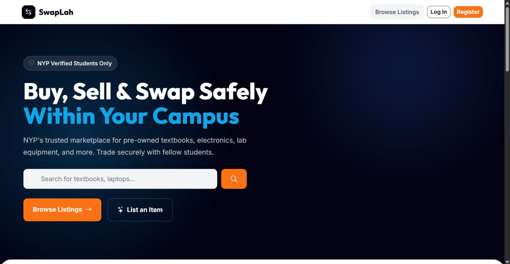
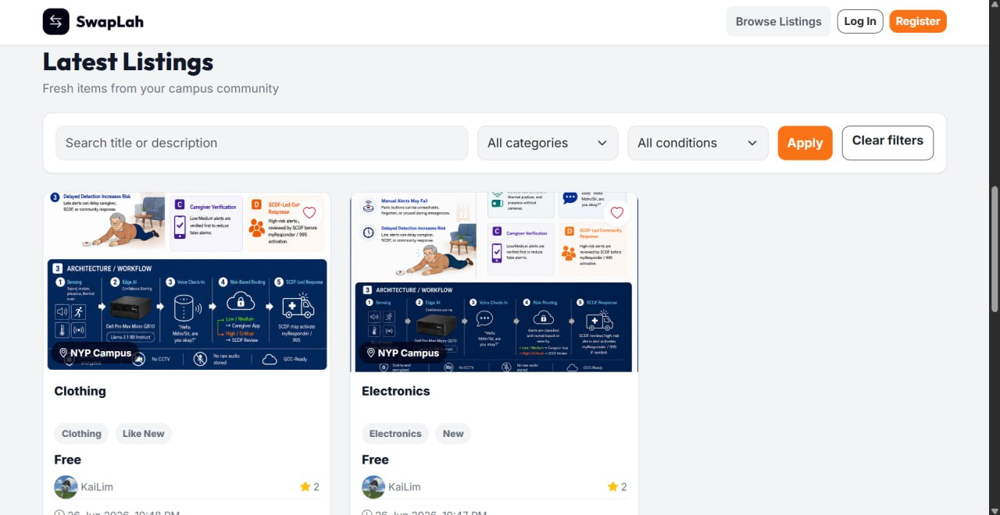
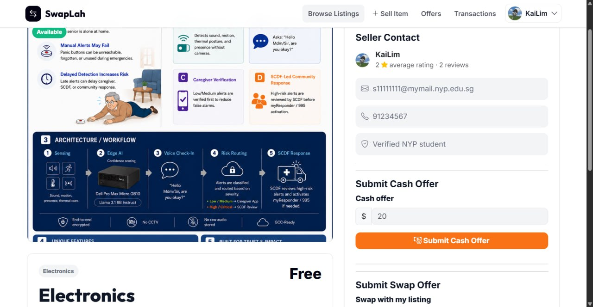
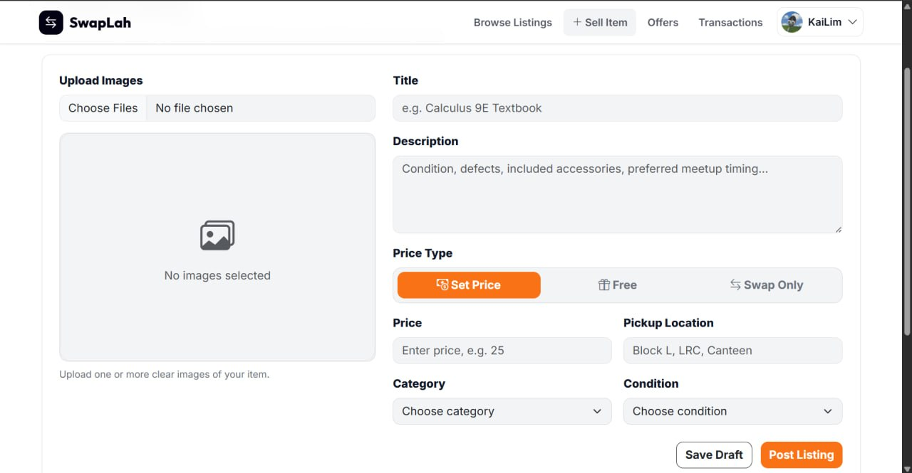
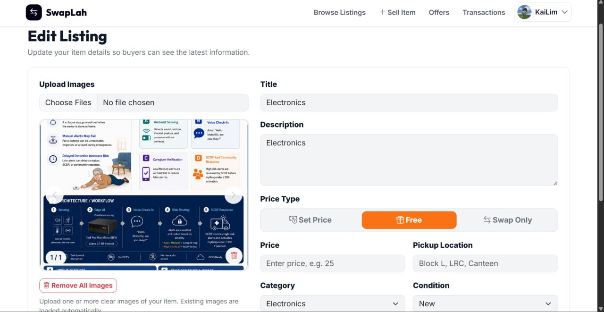
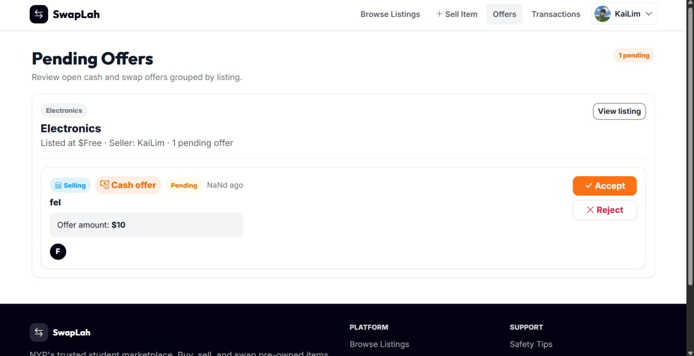
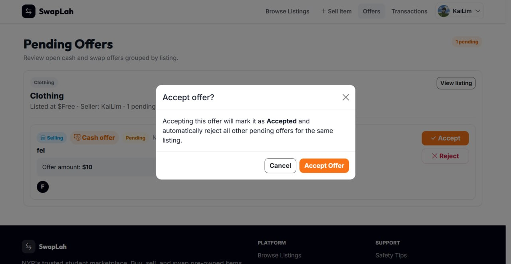
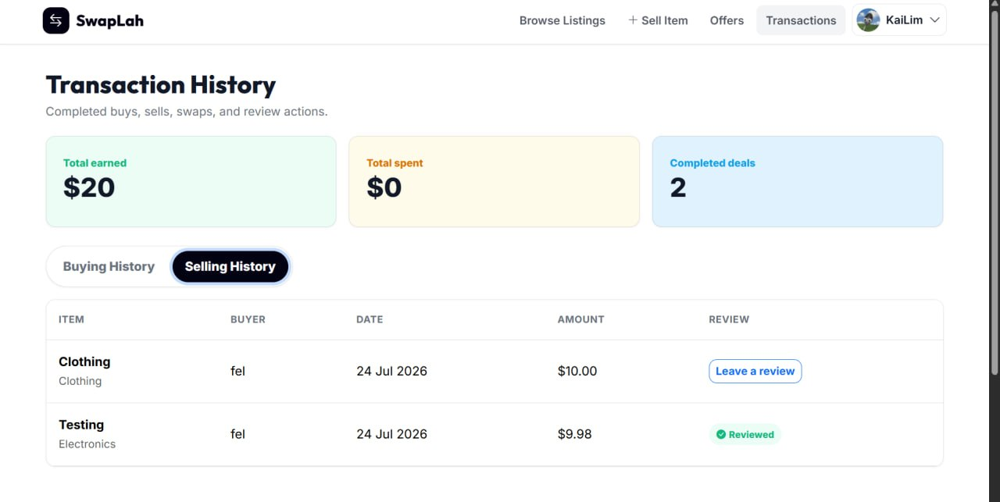
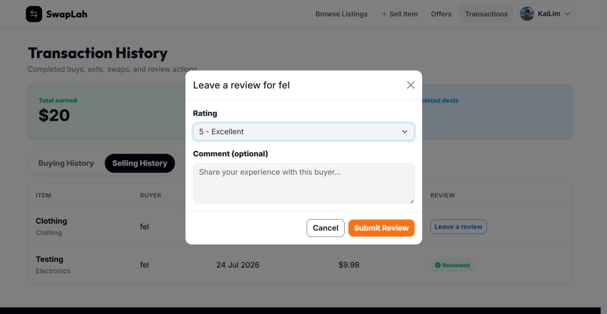
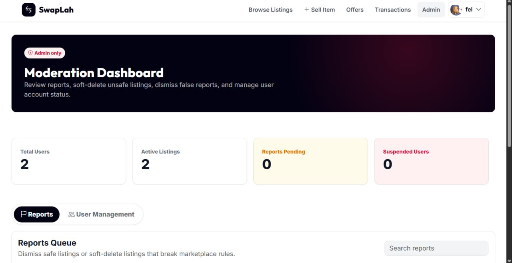

NYP Campus Marketplace & DevSecOps Workflow
Polytechnic students often use general public marketplaces to trade pre-owned textbooks, electronics, lab equipment, and other campus essentials. These platforms are not designed around student identity, campus-specific listings, or the trust requirements of a school community.
Beyond building the marketplace itself, the project required our team to deliver features through an Agile and DevSecOps workflow involving feature branches, merge requests, automated testing, code-quality checks, and security scanning.
Working as part of an Agile development team, we built SwapLah as a Flask and SQLite campus marketplace. The platform supports NYP account registration and authentication, item listings, search and filtering, offer negotiation, transaction tracking, user reviews, reporting, and administrative moderation.
Development was organised through sprint-based feature branches and merge requests. Automated checks were used to validate application quality before changes were merged into the shared development branch.










My main contribution focused on implementing and refining assigned frontend and backend functionality. This included form validation, API integration, responsive interface behaviour, debugging, and ensuring that each feature worked correctly with the shared Flask and SQLite application.
I also developed and maintained automated unit, API, and UI tests to identify regressions before merge requests were approved. These tests supported the project’s continuous-integration quality gates and helped the team verify that new changes did not break existing functionality.
Throughout development, I used AI tools to support rapid prototyping, debugging, test creation, and technical documentation. All generated output was manually reviewed, tested, and refined before being included in the project.
I contributed to the configuration, integration, and troubleshooting of the project’s CI/CD workflow. The pipeline automatically checked code quality, ran unit, UI, and API tests, performed security scanning, and applied a security gate before progressing to the build and deployment stages.
This workflow supported the team’s merge-request process by providing immediate feedback whenever a change introduced a test failure, linting issue, coverage problem, or security finding.
Pipeline screenshot to be added after removing private repository details.
Full-Stack Developer & DevOps Contributor
Apr 2026 - Present